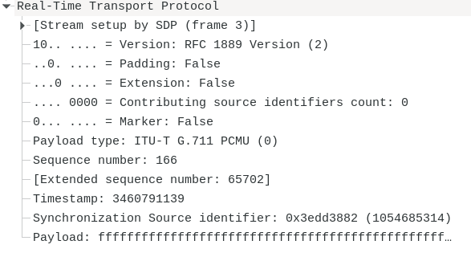

Protocolo RTP¶
RTP, es un protocolo de aplicación sobre UDP que permite el transporte de paquetes de información en tiempo real, tales como voz y video sobre una red IP.
RTP no proporciona calidad de servicio, sin embargo, detecta las siguientes situaciones:
Perdida de paquetes
Retardo variable en el transporte (Jitter)
Llegada de paquetes fuera de secuencia
Enrutamiento asimétrico
RTP soporta cifrado del medio
Nota
RTP define un formato de paquete estándar para el envio de audio y video sobre Internet
La función principal de RTP, es implementar los números de secuencia de paquetes IP para reanudar la información de voz o de vídeo. De manera más general, RTP permite:
Identificar el tipo de información transmitida
Agregarle marcadores temporales y números de secuencia a la información transmitida
Controlar la llegada de los paquetes a destino
V, Versión de RTP
P ()Padding), bit que indica que al final del paquete hay bytes de relleno que no forman parte de la carga útil
X (Extensión), indica que hay una extensión en las cabeceras que posibilita implementaciones para añadir información
CC (CSRC Count), indica el número de identificadores CSRC que siguen al encabezado fijo
M (Market), bit se uso particular por algunos protocolos de media
Payload Type, Tipo de información contenida
0, G.711 Ley-u
3, GSM
4, G.723
8, G.711 Ley-a
18, G.729
26, JPEG (vídeo)
31, H.261 (vídeo)
34, H.263 (vídeo)
Sequence Number, número de secuencia para detectar pérdida de paquetes. El número de paquete es incrementado en 1 por cada paquete enviado
Timestamp, marca de tiemp paa descartar paquetes muy retrasados. Refleja el instante de muestreo del primer byte de carga útil
SSRC (Sinchronization Source Identifier), identifica la fuente de sincronización. Este identificador, debe elegirse al azar, con la intención de que no haya dos fuentes de sincronización dentro de la misma sesión RTP que tenga el mismo identificador
CSRC (Contributor Identifier), identifica las fuentes contribuyentes para la carga útil cotenida en este paquete. El número de identificadores viene dado por el campo CC (sólo se pueden identificar 15 fuentes)
La perdida de paquetes, se determina analizando el campo número de secuencia, observando que se ha producido un salto en la secuencia.
El retardo variable o jitter, se puede corregir analizando el campo Timestamp de la cabecera.
En la RFC3550, también e define el protocolo RTCP, que permite a los participantes en una sesión RTP, intercambiar informes, estadísticas e información relacionadas con la identidad de los participantes
